One use for "Infrastructure-as-Code" solutions is to set up complex content-distribution networks in a consistent and repeatable manner. In this codelab, we will examine how to deploy a custom set of networks, subnetworks, virtual machines, and firewall rules that implement a scalable web site. The network schema for the lab is shown below. As the figure shows, we will create a network of our own called "networking101", then establish several subnetworks across 3 different regions. While our server infrastructure will be deployed in subnetworks located in us-east5 and europe-west1 (10.20.0.0/16 and 10.30.0.0/16 in the figure), we will also deploy client machines in a subnetwork located in the us-west1 region to stress test the servers.
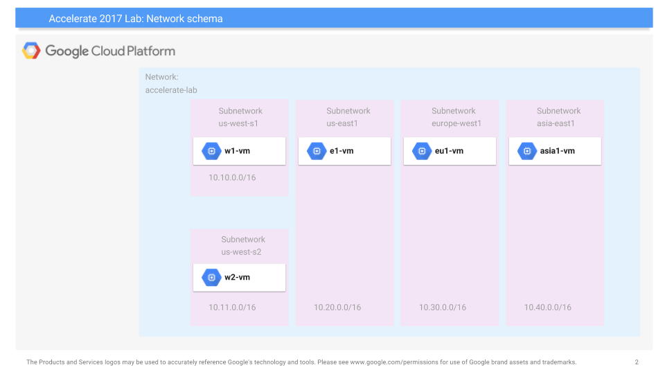
Begin by launching Cloud Shell and copying the files from the lab's bucket hosted on Google Cloud Storage:
gsutil cp -r gs://cs430/networking101 . cd networking101
The lab uses the Deployment Manager service that Google Cloud provides for setting up resources on the platform via specifications. Within the directory, multiple Deployment Manager files are given. The first is the main YAML file shown below. As the file shows, it includes a number of Jinja templates for specifying the different parts of the deployment including its virtual machines, networks, subnetworks, and firewalls. You can think of these templates as libraries of pre-defined configurations that you can create your instances from.
networking-lab.yaml
imports:
- path: vm-template.jinja
- path: network-template.jinja
- path: subnetwork-template.jinja
- path: compute-engine-template.jinja
resources:
- name: compute-engine-setup
type: compute-engine-template.jinjaThe YAML file specifies the main Jinja template to instantiate as a resource. We will go through its parts in the next steps.
Jinja files declare infrastructure to deploy. A snippet showing the networking parts of the main Jinja file is shown below. The snippet defines a variable in Jinja (NETWORK_NAME) that will be used throughout the deployment and sets it to networking101. It then passes it as the name for the custom network that we deploy using the network-template.jinja file.
compute-engine-template.jinja
{% set NETWORK_NAME = "networking101" %}
resources:
- name: {{ NETWORK_NAME }}
type: network-template.jinjaThe template is shown below and defines a custom network that does not have subnetworks automatically created. As we will show later, we will define our own subnetworks for the regions we wish to deploy into. Because the template was passed "networking101" as its name, that will be the name of the network that is created.
network-template.jinja
resources:
- name: {{ env["name"] }}
type: compute.v1.network
properties:
autoCreateSubnetworks: falseOur deployment will specify the various subnetworks as well. Going back to the main Jinja template, we can find all of these subnetworks declared. For each subnetwork, we first assign them a name (us-west-s1, us-west-s2, etc.) and specify the template to use for instantiation (subnetwork-template.jinja). Then, in the properties section, we specify for each subnetwork:
- Their assignment into our custom network from before (
networking101) - Their region based on the initial figure
- Their CIDR IP address range as indicated in the initial figure.
The specification for the two subnetworks is shown below:
compute-engine-template.jinja
resources:
- name: us-west-s1
type: subnetwork-template.jinja
properties:
network: {{ NETWORK_NAME }}
range: 10.10.0.0/16
region: us-west1
- name: us-west-s2
type: subnetwork-template.jinja
properties:
network: {{ NETWORK_NAME }}
range: 10.11.0.0/16
region: us-west1
...The subnetwork Jinja template instantiates the actual infrastructure using the parameters it has been passed (network, range, region).
subnetwork-template.jinja
resources:
- name: {{ env["name"] }}
type: compute.v1.subnetwork
properties:
ipCidrRange: {{ properties["range"] }}
network: $(ref.{{ properties["network"] }}.selfLink)
region: {{ properties["region"] }}Finally, the deployment specifies a virtual machine to be created in each subnetwork. For the machines in us-west1, a snippet from the main Jinja template is shown below:
compute-engine-template.jinja
resources:
- name: w1-vm
type: vm-template.jinja
properties:
machineType: e2-micro
zone: us-west1-b
network: {{ NETWORK_NAME }}
subnetwork: us-west-s1
- name: w2-vm
type: vm-template.jinja
properties:
machineType: e2-micro
zone: us-west1-b
network: {{ NETWORK_NAME }}
subnetwork: us-west-s2
ip: 10.11.0.100The snippet shows that a virtual machine named w1-vm is to be created using an e2-micro type in us-west1 and is to be placed on the networking101 network in subnetwork us-west-s1 (as specified in the previous step). The network address will be automatically assigned since it has not been specified. The declaration of w2-vm is similar, but the IP address is explicitly assigned to be 10.11.0.100.
The template takes the parameters passed to it (name, machineType, zone, network, subnetwork, ip) and then:
- Creates the VM in the specified zone using the machine type given.
- Configures the base operating system image for the VM to be Debian10
- Configures the network and subnetwork for the VM as well as its IP address, if given
The final part of the template specifies in the machine's "metadata", a startup-script that should be run when the VM is first brought up. As the script shows, each VM will automatically install a set of packages we'll be using for subsequent steps (e.g. traceroute, siege)
vm-template.jinja
resources:
- name: {{ env["name"] }}
type: compute.v1.instance
properties:
zone: {{ properties["zone"] }}
machineType: https://www.googleapis.com/compute/v1/projects/{{ env["project"] }}/zones/{{ properties["zone"] }}/machineTypes/{{ properties["machineType"] }}
disks:
- deviceName: boot
initializeParams:
sourceImage: https://www.googleapis.com/compute/v1/projects/debian-cloud/global/images/family/debian-10
networkInterfaces:
- network: $(ref.{{ properties["network"] }}.selfLink)
subnetwork: $(ref.{{ properties["subnetwork"] }}.selfLink)
{% if properties["ip"] %}
networkIP: {{ properties["ip"] }}
{% endif %}
metadata:
items:
- key: startup-script
value: |
#!/bin/bash
apt-get -y update
apt-get -y install traceroute mtr tcpdump iperf whois host dnsutils siegeWithin Cloud Shell, launch the deployment and name it networking101
gcloud deployment-manager deployments create networking101 --config networking-lab.yaml
- Take a screenshot of the output to include in your lab notebook. How many networks, subnetworks, and VM instances have been created?
- Visit the web console for VPC network and show the network and the subnetworks that have been created. Validate that it has created the infrastructure in the initial figure. Note the lack of firewall rules that have been created.
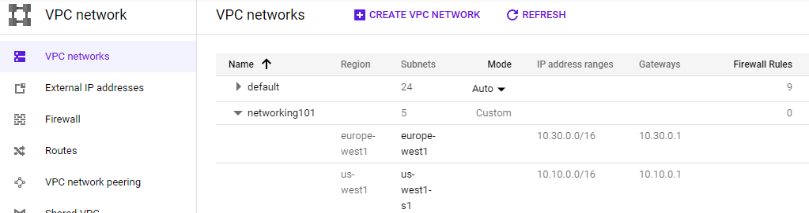
- Visit the web console for Compute Engine and show all VMs that have been created, their internal IP addresses and the subnetworks they have been instantiated on. Validate that it has created the infrastructure shown in the initial figure.
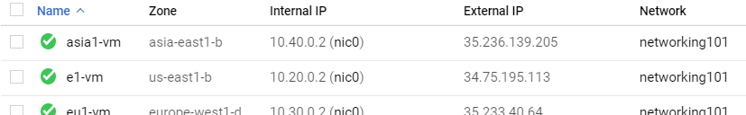
- Click on the
sshbutton for one of the VMs and attempt to connect. Did it succeed?
Secure-by-default is an important concept in the cloud given there are so many ways to configure systems and so many systems being deployed. In the previous step, although we configured the networks and machines, the default access policy inside a network we create is deny. Thus, all traffic is disallowed by the firewall unless we add rules to explicitly allow it.
To ameliorate this, we will append our deployment specification with firewall rules that allow the traffic we need. The update will be added to the original YAML file. Open up the file (networking-lab.yaml).
Add the following line to the end of the imports section to include a new template file that we will create for adding firewall rules to the deployment
(Add to) networking-lab.yaml
- path: firewall-template.jinjaThen, add the following lines at the bottom of the file under the resources section to apply it to our network..
(Add to) networking-lab.yaml
- name: networking-firewall
type: firewall-template.jinja
properties:
network: networking101The additional specification creates a firewall configuration based on a Jinja template that is then attached to our custom network (networking101). The template itself is shown below. Create the file in the same directory. As the template shows, a firewall rule named networking101-allow-internal is created which allows all TCP, UDP, and ICMP traffic amongst the internal interfaces on the network (e.g. 10.0.0.0/8). The second rule is named networking101-allow-ssh and allows ssh connections from any network source (0.0.0.0/0). Similarly, the last rule, networking101-allow-icmp allows ICMP traffic from any network source.
(Create) firewall-template.jinja
resources:
- name: {{ env["name"] }}-allow-internal
type: compute.v1.firewall
properties:
network: $(ref.{{ properties["network"] }}.selfLink)
sourceRanges: ["10.0.0.0/8"]
allowed:
- IPProtocol: TCP
ports: ["0-65535"]
- IPProtocol: UDP
ports: ["0-65535"]
- IPProtocol: ICMP
- name: {{ env["name"] }}-allow-ssh
type: compute.v1.firewall
properties:
network: $(ref.{{ properties["network"] }}.selfLink)
sourceRanges: ["0.0.0.0/0"]
allowed:
- IPProtocol: TCP
ports: ["22"]
- name: {{ env["name"] }}-allow-icmp
type: compute.v1.firewall
properties:
network: $(ref.{{ properties["network"] }}.selfLink)
sourceRanges: ["0.0.0.0/0"]
allowed:
- IPProtocol: ICMPWe will now update the deployment in-place. Deployment manager will automatically determine what needs to be updated and only re-deploy infrastructure that the new specification requires. Back in Cloud Shell, run the following in the networking101 directory that contains the updated YAML file.
gcloud deployment-manager deployments update networking101 --config networking-lab.yaml
Visit the networking101 VPC network in the web UI
- Take a screenshot that indicates the new rules have been deployed
Then, go back to the Compute Engine console and ssh into each VM. We will now use the sessions on each VM to perform the ping command in order to measure the latency between the different geographic regions. The table below shows the regions and their geographic locations.
Region | Location |
us-west1 | The Dalles, Oregon, USA |
us-east5 | Columbus, Ohio, USA |
europe-west1 | Saint Ghislain, Belgium |
asia-east1 | Changhua County, Taiwan |
Given the locations of the regions and the physical distance between them, we can then calculate the "ideal" latency between them using the speed of light and compare it against the latency via the network. Using the ssh sessions, perform a pairwise ping between all 4 regions that you have deployed VMs on. Note that you can either use the name of the VM as an argument or its internal IP address. Examples are shown below for ping commands that perform 3 round-trip measurements to w2-vm (10.11.0.100):
ping -c 3 w2-vm
ping -c 3 10.11.0.100- Given this, fill in the table with the measured latencies between the 6 pairs and include it in your lab notebook. Use the shortest latency measured for each pair.
Location pair | Ideal latency | Measured latency |
us-west1 us-east5 | ~45 ms | |
us-west1 europe-west1 | ~93 ms | |
us-west1 asia-east1 | ~114 ms | |
us-east5 europe-west1 | ~76 ms | |
us-east5 asia-east1 | ~141 ms | |
europe-west1 asia-east1 | ~110 ms |
The current deployment has a fixed number of VM instances. When traffic is light, this can result in idle resources and significant unnecessary cost. When traffic is heavy, this can lead to congestion and a loss of users due to poor performance. In a modern deployment, infrastructure is scaled based on demand. While this scaling is automatically done in serverless deployments, with Compute Engine VMs, we can do this by creating Managed Instance Groups (us-east5-mig, europe-west1-mig below).
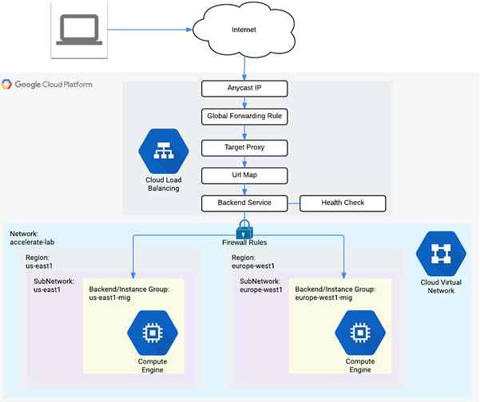
Instance Groups are collections of Compute Engine VMs that are derived from a single template. The number of replicas in the group is varied based on the load being experienced.
In order to route traffic so that it is evenly spread across instances in a group, we must also instantiate a Load Balancer. A load balancer acts as a reverse-proxy, taking in requests and forwarding them to a backend server for processing. To demonstrate this, we will create the two instance groups then set up a scaling policy for each to determine how they will scale out and scale in. Then, we'll instantiate a load balancer to route requests amongst the servers in the two instance groups.
In our previous steps, we added firewall rules to allow ssh and ICMP traffic from all sources. In the next steps, we wish to build a scalable web site. In order for it to be accessible externally, we must also allow HTTP traffic from all sources. Although this could be instantiated via an update to the Deployment Manager specifications as before, we will instead demonstrate how this can be done via the gcloud CLI.
The CLI command below does this by creating a firewall rule named networking-firewall-allow-http, specifying that traffic to the HTTP port (80) from all sources (0.0.0.0/0) is allowed and attaching it to the networking101 network. In addition, we associate the tag http-server to it so that it can be attached to each of the VMs we create to serve our site.
gcloud compute firewall-rules create networking-firewall-allow-http \ --allow tcp:80 --network networking101 --source-ranges 0.0.0.0/0 \ --target-tags http-server
In order to scale Compute Engine VMs out with replicas, we must first specify an Instance Template. In this case, we will use a per-region template to differentiate machines created in one region versus another. Similar to how VMs were specified in the Deployment Manager Jinja template, the command below creates a template for the us-east5 region called us-east5-template. VMs created from this template are placed on the us-east5 subnetwork and have the http-server tag attached to them to allow incoming HTTP traffic.
gcloud compute instance-templates create "us-east5-template" \ --image-project debian-cloud \ --image debian-10-buster-v20221102 \ --machine-type e2-micro \ --subnet "us-east5" \ --metadata "startup-script-url=gs://cs430/networking101/website/startup.sh" \ --region "us-east5" \ --tags "http-server"
The command also specifies a startup script that should be executed whenever a VM instance is created (startup-script-url set in the metadata of the instance). The startup file is shown below. It installs a simple Apache/PHP server, downloads an index.php file, and obtains the zone information of the instance from the VM instance's Metadata service (See CS 495 for more on this service). It then substitutes the region information into the index.php file using the Unix stream editor command (sed).
gs://.../networking101/website/startup.sh
#! /bin/bash
apt-get update
apt-get install -y apache2 php
cd /var/www/html
rm index.html -f
rm index.php -f
wget https://storage.googleapis.com/cs430/networking101/website/index.php
META_REGION_STRING=$(curl "http://metadata.google.internal/computeMetadata/v1/instance/zone" -H "Metadata-Flavor: Google")
REGION=`echo "$META_REGION_STRING" | awk -F/ '{print $4}'`
sed -i "s|region-here|$REGION|" index.phpThe PHP file is below. The 'region-here' text is replaced by the sed command and results in the PHP script showing us the region that it has been brought up in along with the IP address of the client and the hostname of the instance (to allow us to differentiate between various replicas in our deployment).
gs://.../networking101/website/index.php
<?php
$ip = $_SERVER['REMOTE_ADDR'];
// display it back
echo "<h1>Networking 101 Lab</h1>";
echo "<h2>Client IP</h2>";
echo "Your IP address : " . $ip;
echo "<h2>Hostname</h2>";
echo "Server Hostname: " . php_uname("n");
echo "<h2>Server Location</h2>";
echo "Region and Zone: " . "region-here";
?>Create the second instance template for the lab in and europe-west1. As the command shows, it only differs from the first in its region and subnet.
gcloud compute instance-templates create "europe-west1-template" \ --image-project debian-cloud \ --image debian-10-buster-v20221102 \ --machine-type e2-micro \ --subnet "europe-west1" \ --metadata "startup-script-url=gs://cs430/networking101/website/startup.sh" \ --region "europe-west1" \ --tags "http-server"
Then, see that both templates have been created by listing them.
gcloud compute instance-templates listThey should also show up in the web console of Compute Engine under "Instance Templates".
Up until this point, we have mostly relied upon Deployment Manager and the gcloud CLI to configure resources. The configuration can also be done via the web console. For subsequent steps, deploy using the gcloud commands, but view how it can be done via the web console so you can see how they map to each other.
Before we create our managed instance groups from templates, we must first specify a health check. Health checks enable GCP to automatically detect non-functioning nodes in a managed instance group when they crash so that they can be restarted. This is useful to ensure high availability for our service. As we are running a web site as our application, we can define a simple HTTP check called instance-health-check on port 80 that triggers every 10 seconds and will declare failure upon 3 failed checks.
A single gcloud command can create this check:
gcloud compute health-checks create http instance-health-check \ --check-interval=10s \ --port=80 \ --timeout=5s \ --unhealthy-threshold=3
Web console option
Visit "Compute Engine"=>"Health checks" and create a new health check with the settings specified:
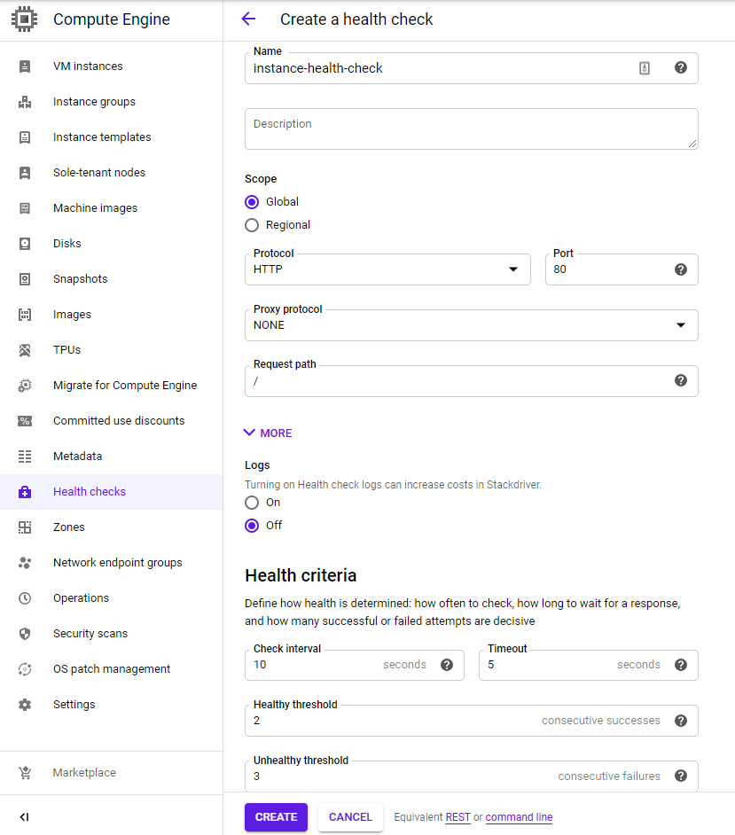
Given our templates, we will first create a simple managed instance group in our European region with a fixed number of instances. The settings are below.
Name: europe-west1-mig
- Location: Multi-zone
- Region:
europe-west1 - Instance definition:
europe-west1-template - Number of instances: 3
- Health check (
instance-health-check)
We can instantiate the group using the gcloud commands given below to create the group and specify its health check.
gcloud compute instance-groups managed create europe-west1-mig \ --size 3 \ --region europe-west1 \ --template europe-west1-template gcloud compute instance-groups managed update europe-west1-mig \ --health-check instance-health-check \ --initial-delay 120 \ --region europe-west1
Because we want this instance group to eventually serve web requests, we "expose" port 80 and name it http. A load balancer will then route requests to this named port.
gcloud compute instance-groups set-named-ports europe-west1-mig \ --named-ports=http:80 --region europe-west1
Web console option
The web console of Compute Engine can also be used to configure this group as shown below.:
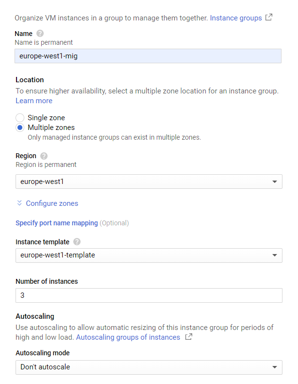
Leave the rest of the settings at their defaults, but for Autohealing, specify the health check created in the previous step.
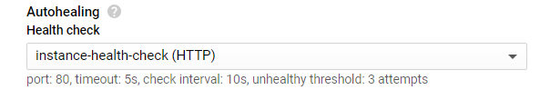
In Cloud Shell, we will now create two managed instance groups from the instance templates created previously. Name the first one us-east5-mig and set it to use autoscaling from 1 to 5 instances and the settings below:
Name: us-east5-mig
- Location: Multi-zone
- Region:
us-east5 - Instance definition:
us-east5-template - Autoscaling: On, Based on HTTP load balancing usage, Usage 80%, Cool down 45 seconds, Minimum 1 instance, Maximum 5 instances
We will create the deployment via several individual gcloud commands. The first two commands create the group and specify its health check.
gcloud compute instance-groups managed create us-east5-mig \ --size 1 \ --region us-east5 \ --template us-east5-template gcloud compute instance-groups managed update us-east5-mig \ --health-check instance-health-check \ --initial-delay 120 \ --region us-east5
The next command sets up autoscaling for the instance group to range from 1 to 5 replicas based on load-balancing utilization.
gcloud compute instance-groups managed set-autoscaling us-east5-mig \ --mode on \ --region us-east5 \ --min-num-replicas=1 --max-num-replicas=5 \ --cool-down-period=45 \ --scale-based-on-load-balancing \ --target-load-balancing-utilization=0.8
Finally, as before, we want this instance group to eventually serve web requests so we "expose" port 80 and name it http for the load balancer we will deploy.
gcloud compute instance-groups set-named-ports us-east5-mig \ --named-ports=http:80 --region us-east5
Web console option
An example of how to create the group in the web console with the appropriate settings is shown below. Visit the web console for Compute Engine and click on "Instance Groups" and "Create instance group". Within the UI, configure the settings from above.
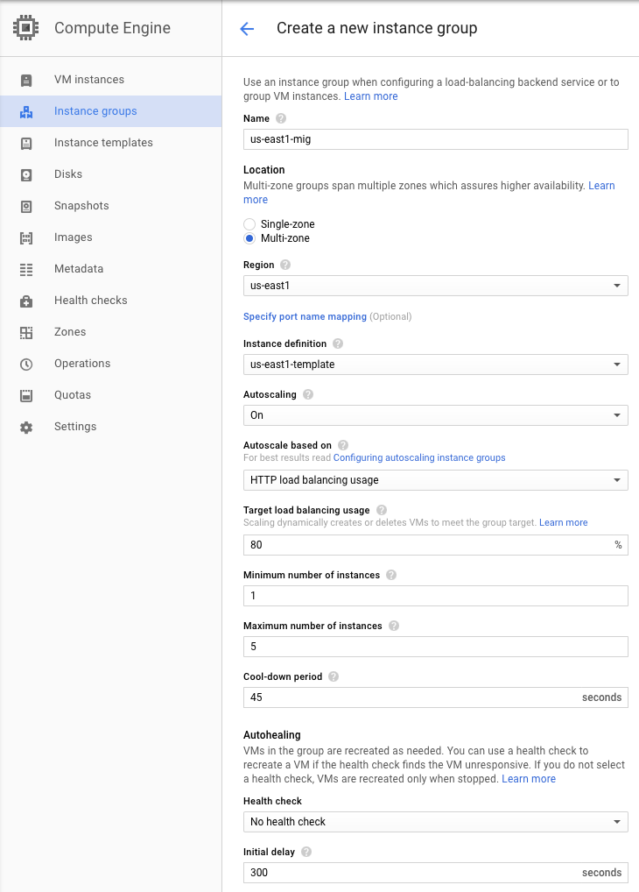
Ensure that the groups and their associated instances have been created properly via:
gcloud compute instance-groups list
Wait a minute, even after the deployment finishes, for the instances to fully initialize. Then, go to the web console of Compute Engine and directly visit the web server that has been brought up within us-east5-mig via its IP address (http://).
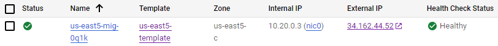
You should see the output of the PHP script.
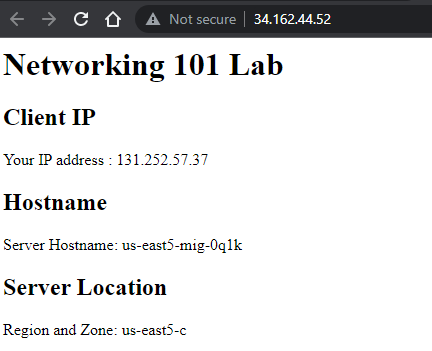
Repeat with an instance from europe-west1-mig. Answer the following questions for your lab notebook
- Are the instances in the same availability zone or in different ones?
- List all availability zones that your servers show up in for your lab notebook.
While we have set up a number of individual web servers for our site, we do not have a way of distributing the requests from clients to them automatically based on load. To do so, we must instantiate a load balancer. Load balancers will accept requests from clients on a single, anycast IP address and forward the request to the most appropriate web server on the backend based on proximity and load. In this step, we specify a backend service consisting of our two instance groups and create a load balancer with a static IP address that will forward requests to them.
The configuration requires a number of gcloud commands. The first set of commands creates a backend service on the HTTP port (webserver-backend-migs) and then adds the two instance groups to them (europe-west1-mig, us-east5-mig)
gcloud compute backend-services create webserver-backend-migs \ --protocol=http --port-name=http --timeout=30s \ --health-checks=instance-health-check \ --global gcloud compute backend-services add-backend webserver-backend-migs \ --instance-group=europe-west1-mig --instance-group-region=europe-west1 \ --balancing-mode=utilization --max-utilization=0.8 \ --global gcloud compute backend-services add-backend webserver-backend-migs \ --instance-group=us-east5-mig --instance-group-region=us-east5 \ --balancing-mode=rate --max-rate-per-instance=50 \ --global
Then, we create the load balancer (also known as a URL map), point it to the backend, and create an HTTP proxy that will forward HTTP requests from the load balancer to the backend.
gcloud compute url-maps create webserver-frontend-lb \ --default-service webserver-backend-migs gcloud compute target-http-proxies create webserver-proxy \ --url-map webserver-frontend-lb
Next, we allocate an IPv4 address to use and associate a forwarding rule to take incoming HTTP requests to that address and send them to the HTTP proxy we've created.
gcloud compute addresses create webserver-frontend-ip --ip-version=ipv4 --global gcloud compute forwarding-rules create webserver-frontend-fwrule \ --ip-protocol=tcp --ports=80 --address=webserver-frontend-ip \ --target-http-proxy webserver-proxy \ --global
Web console option
The configuration via the web console is fairly involved. To begin with, visit "Network services" and create a load balancer configured for HTTP load balancing and specify that it be Internet-facing (From Internet to my VMs)
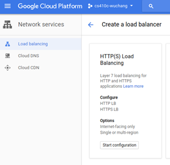
Name the load balancer webserver-frontend-lb and sequence through its steps for configuration
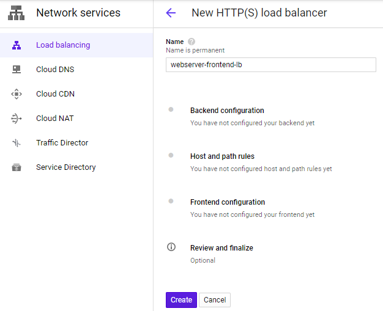
Start with the Backend configuration and create a backend service that the load balancer will forward requests to:
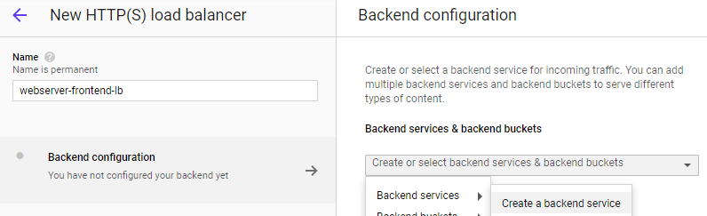
Name the backend webserver-backend-migs. Then, within the "New backend" UI, specify the europe-west1-mig group and port 80. Click "Done" to add it.
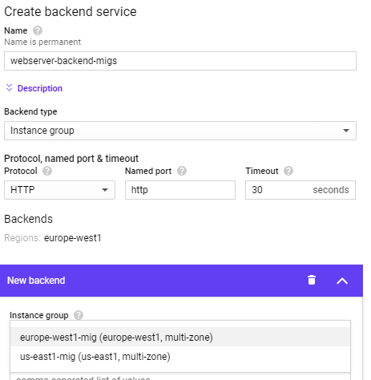
Once added, click on "Add backend" and repeat the process for the other instance group.

In the Health Check section, select instance-health-check.
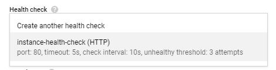
Then click "Create"
In "Frontend configuration", configure the frontend IP address for the load balancer and name it webserver-frontend-ip, then click "Done"
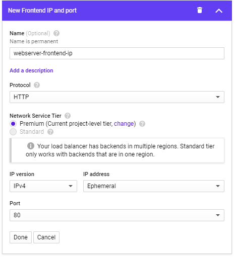
Finally, click "Create" to create the load balancer.
We have now set up our scalable web site below. Review the diagram to see each component has been instantiated in the codelab.
Visit "Network Services"=>"Load Balancing", then click on the load balancer you instantiated. Visit the IP address that it handles requests on.
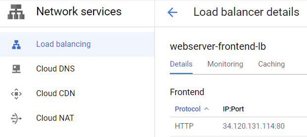
- Show a screenshot of the page that is returned. If you get an error, you may need to wait several minutes for the load balancer to finish deploying.
- Which availability zone does the server handling your request reside in?
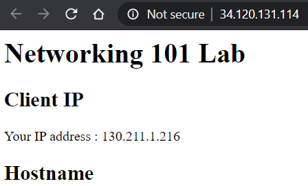
We will now show how our load balancer can direct traffic to our instance groups and how we can scale instance groups based on demand. From your initial Deployment Manager deployment, bring up two ssh sessions: one on w1-vm and one on eu1-vm.
On w1-vm, launch a siege on your load balancer IP address. Note that the command is configured for 250 simultaneous requests. If this load is insufficient to impact autoscaling, you may need to increase the number of concurrent requests.
# On w1-vm siege -c 250 http://<LoadBalancerIP>
Visit the web console. Go to "Network Services"=>"Load Balancing" and click on your load balancer (webserver-frontend-lb). Then, click on the "Monitoring" tab. In the Backend dropdown, select the webserver-backend-migs as shown below and expand out its details. The UI shows traffic sources by region and the backends that they are routed to by the load balancer. Since w1-vm is in the US, traffic is sent to us-east5-mig and the instance group scales up from 1 instance to 5. As the instances are brought up, the load balancer directs requests over to the europe-west1-mig, creating significant intercontinental traffic.
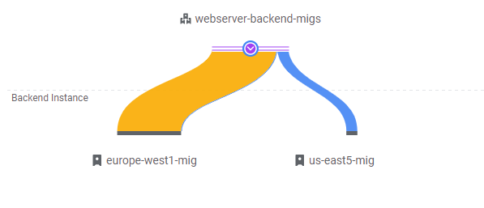
- Take a screenshot of the initial traffic distribution
Keep this window open for 5-10 minutes as the system adapts to the load and the UI updates.
- Take a screenshot of the UI as additional instances are brought up and show that the traffic distribution shifts
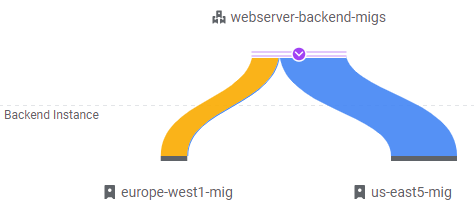
Note that eventually, traffic is handled mostly by the 5 VMs in us-east5-mig.
Stop the siege running on w1-vm. Then, go to eu1-vm and launch an identical siege on your load balancer IP address:
# On eu1-vm siege -c 250 http://<LoadBalancerIP>
Go back to the load balancer monitoring UI updates to show traffic now coming from the European region. For web sites, it is ideal to have clients in Europe be served by servers in Europe. As the UI will eventually show, requests from eu1-vm are sent to europe-west1-mig and the total traffic will shift away from the servers in us-east5-mig. Using the anycast functionality of the load balancer, this can be done with a single IP address.
- Show a screenshot of the final traffic distribution.
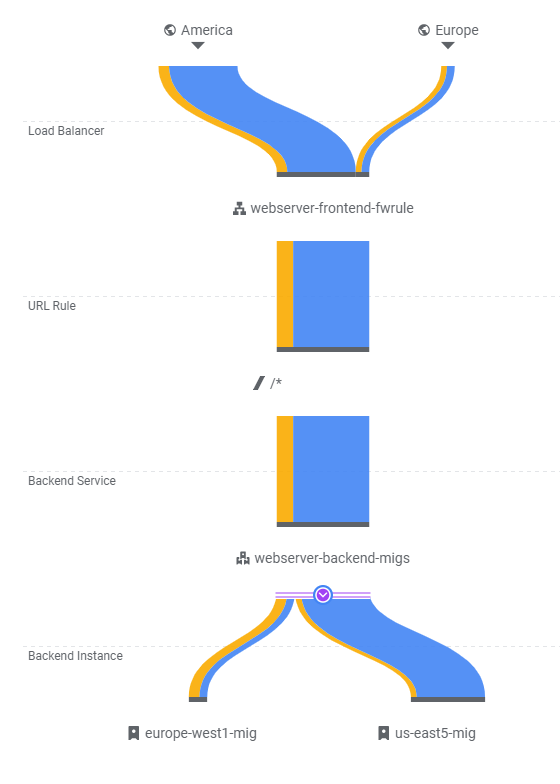
When finished, exit out of both w1-vm and eu1-vm.
We have deployed a significant amount of resources to implement our scalable web site. As a result, it is important that we clean up immediately to avoid running up charges unnecessarily.
The following sets of commands delete our load balancing setup:
gcloud compute forwarding-rules delete webserver-frontend-fwrule --global gcloud compute target-http-proxies delete webserver-proxy gcloud compute addresses delete webserver-frontend-ip --global gcloud compute url-maps delete webserver-frontend-lb gcloud compute backend-services delete webserver-backend-migs --global
Then, delete the managed instance group in us-east5.
gcloud compute instance-groups managed delete us-east5-mig --region us-east5
Do the same for the managed instance group in europe-west1.
gcloud compute instance-groups managed delete europe-west1-mig --region europe-west1
Then, delete the health checks, instance templates, and the firewall rule allowing HTTP.
gcloud compute health-checks delete instance-health-check gcloud compute instance-templates delete us-east5-template gcloud compute instance-templates delete europe-west1-template gcloud compute firewall-rules delete networking-firewall-allow-http
Finally, we delete the initial deployment.
gcloud deployment-manager deployments delete networking101
Visit the web console of Compute Engine and ensure no instances remain running.